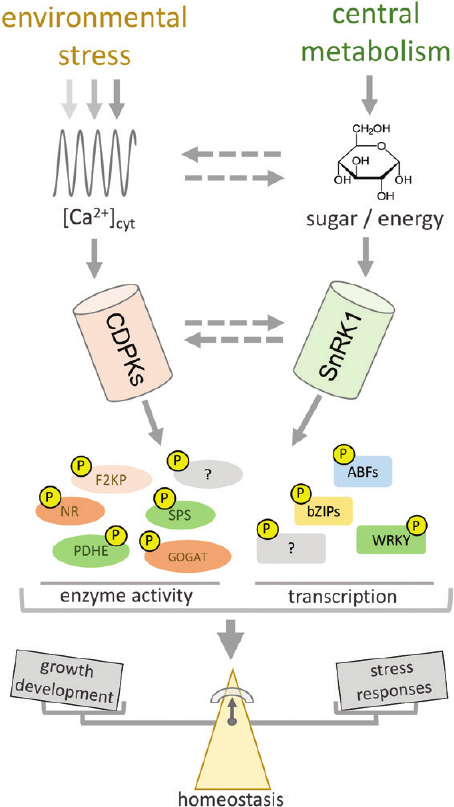

Integrating carbon/nitrogen and stress signalling
A review proposing how two families of "sensor" enzymes inside plant cells — calcium-dependent protein kinases (CDPKs) and SnRK1 — work together to balance normal growth metabolism against the plant's response to environmental stress, so it can keep functioning under pressure instead of shutting down.
Alves HLS†, Matiolli CC†, Soares RC, Almadanim MC, Oliveira MM, Abreu IA. Carbon/nitrogen metabolism and stress response networks – calcium-dependent protein kinases as the missing link? Journal of Experimental Botany 72, 4190–4201 (2021). DOI: 10.1093/jxb/erab136.
Open article →